Recentdraft text 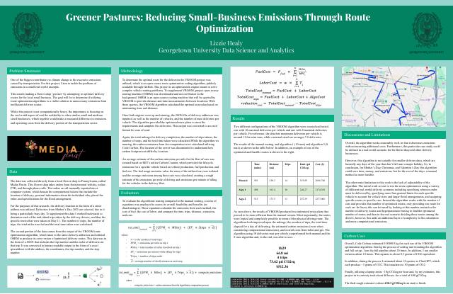
Paper + poster Data ScienceDSAN 5550 · Fall 2025 Greener Pastures: Reducing Small-Business Emissions Through Route Optimization Can smarter routing make a small business greener? Using real Mother's Day 2025 delivery data from a Pennsylvania florist, I compared the shop's manual routes with routes optimized by VROOM and OSRM. The optimized plan saved 89 minutes, 66.8 miles, 4 delivery trips and $512.36, with a measurable drop in carbon emissions. VROOMOSRMRoute optimization
Recentdraft text 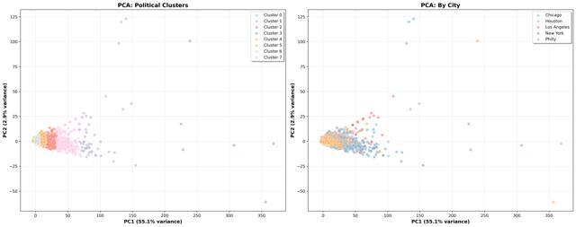
Website Data ScienceDSAN 6000 · Fall 2025 Digital Footprints: What Subreddits Reveal about City-Level Diversity A big-data analysis of Reddit comments and submissions from city subreddits (Houston, New York, Philadelphia, Los Angeles and others) from June 2023 to July 2024, comparing how cities express local identity through language, sentiment and engagement. PySparkAWSNLPSentiment analysis
draft text 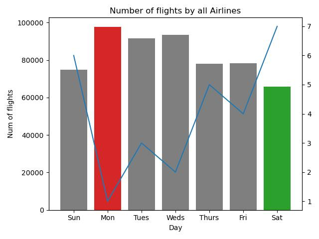
Website Data ScienceDSAN 6300 · Fall 2025 April Showers Bring May Delays Uses Bureau of Transportation Statistics on-time data for May 2023 to recommend when and how to fly: the best days to travel, and which airports and airlines to avoid. SQLData visualization
Recentdraft text 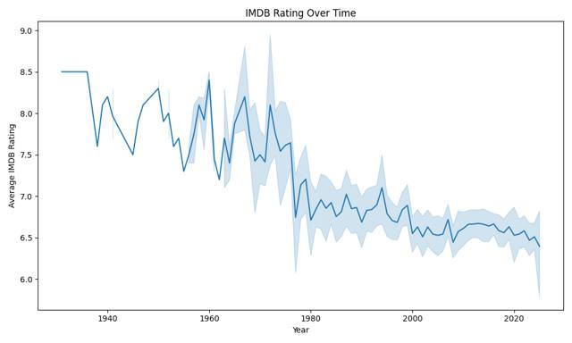
Website Data ScienceDSAN 5650 · Summer 2025 Leading Ladies and Lost Revenue A causal analysis of whether casting a woman in the leading role changes a film's worldwide box-office revenue. Films are matched with propensity score weighting on genre, budget, release timing and a constructed star-power metric, with sentiment analysis of descriptions and taglines. IMDb rating serves as a robustness check. Propensity score matchingSentiment analysisCausal inference
draft text 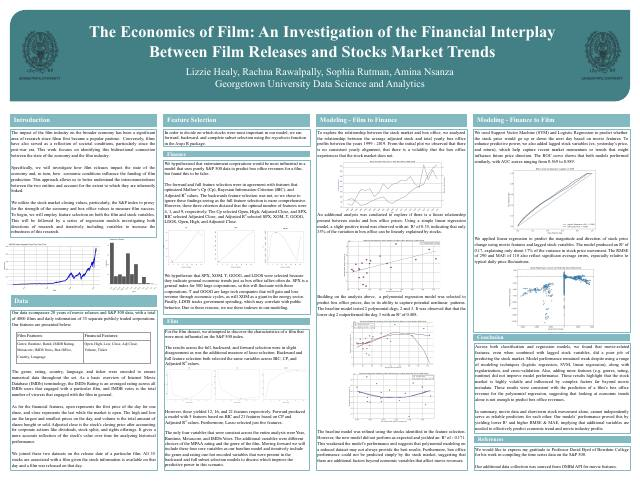
Report + poster Data ScienceDSAN 5300 · Spring 2025 The Economics of Film: Film Releases and Stock Market Trends Examines the two-way link between film releases and the stock market, joining S&P 500 stock data with IMDb film data from the OMDb API. Classifiers could not predict stock moves from film features; XGBoost reached an R² of 0.76 predicting stock changes from selected features. XGBoostRegressionOMDb API
draft text Report + slides Data ScienceDSAN 6600 · Spring 2025 Decoding the Divine: Predicting Religious Affiliation Compares a multi-layer perceptron, quadratic discriminant analysis and a transformer for classifying religious affiliation from Pew Research Center survey data. The tuned transformer performed best, at 94.9% test accuracy, though all models struggled with smaller groups. scikit-learnTransformersMLPClusteringPCA
draft text Slides Data ScienceDSAN 5400 · Spring 2025 Smart Movie Recommender A movie recommender built in four steps: scraping IMDb and querying Gemini for data, cleaning and normalizing features, computing cosine similarity between films, and an interface that turns a user's input into suggestions. Web scrapingGemini APICosine similarity
draft text 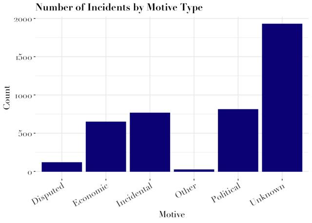
Website Data ScienceScholarship · Spring 2025 Understanding the Why: Motive in Violence Against Aid Workers Uses the Aid Worker Security Database (1997 onward) to ask why attacks on humanitarian workers happen: how motives change over time and by region, and whether the motive relates to the outcome and to who is affected. Data visualization
draft text 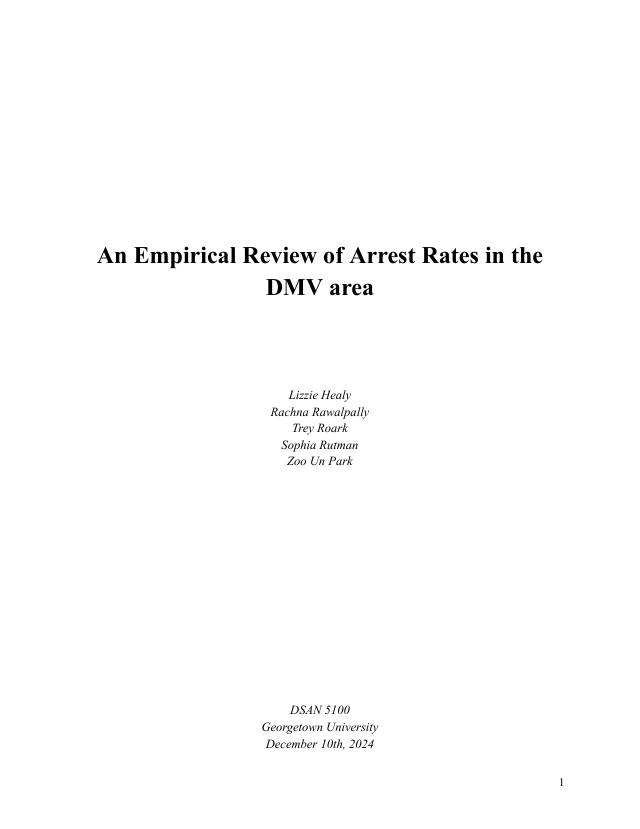
Report + slides Data ScienceDSAN 5100 · Fall 2024 An Empirical Review of Arrest Rates in the DMV Area How have arrest rates in D.C., Maryland and Virginia changed over the past ten years? The report covers time-series outlier detection, seasonality, arrest categorization, geospatial analysis, and juvenile versus adult arrests with significance tests and transition matrices. PythonRTime seriesGeospatial analysisHypothesis testing
draft text 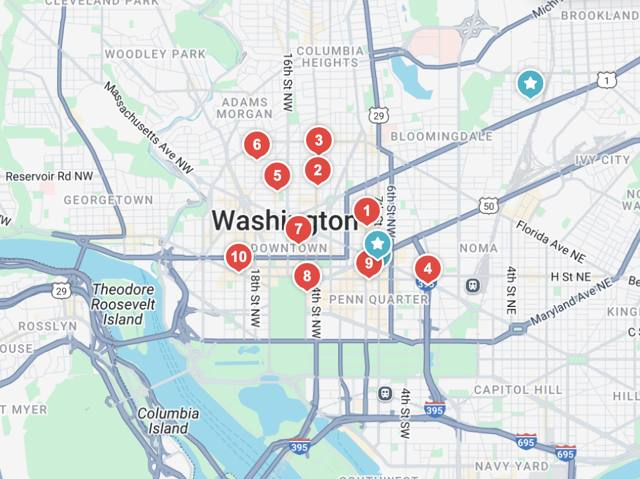
Website Data ScienceDSAN 5000 · Fall 2024 Food for Thought: DC's Food Gap and Yelp Ratings Investigates DC's socioeconomic food gap through Yelp: which features drive high ratings, whether higher-income neighborhoods have better-rated restaurants, and whether a restaurant's rating can be predicted from its features. Supervised learningUnsupervised learningYelp data
draft text 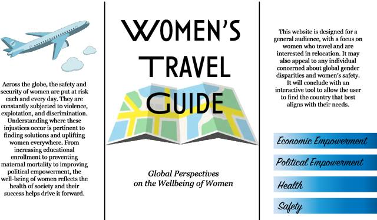
Website Data ScienceDSAN 5200 · Fall 2024 Women's Travel Guide: Global Perspectives on the Wellbeing of Women An interactive visualization site comparing countries on women's economic empowerment, political empowerment, health and safety, written for women who travel or relocate. Includes a radar chart ranking countries on labor-force participation, paid maternity leave and education. Interactive visualization
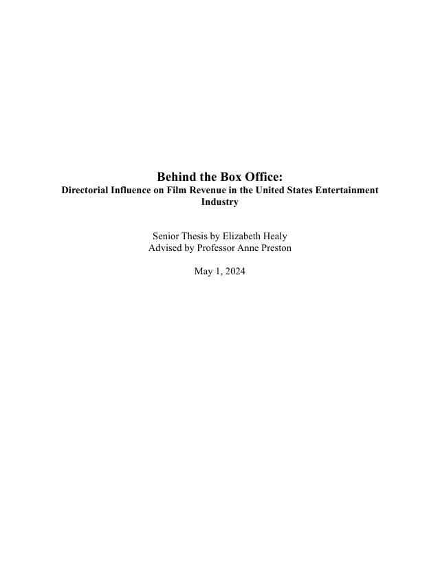
Thesis EconomicsECON 396 · Spring 2024 Behind the Box Office: Directorial Influence on Film Success Estimates how a director's track record affects both box-office revenue and critical acclaim for U.S. films released 2002 to 2016, using merged Kaggle, The Numbers and IMDb data, OLS regression, film and director controls, and fixed effects for budget and director-actor collaborations. OLS regressionFixed effectsData merging
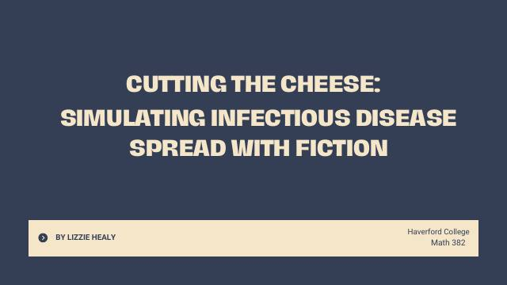
Paper + slides MathematicsMATH 382 · Fall 2023 Cutting the Cheese: Simulating Infectious Disease Spread with Fiction Models the "cheese touch" from Diary of a Wimpy Kid as a modified SIR epidemic, with touch-based transmission, a time-limited infection and crossed fingers as immunity. Several model versions are simulated in MATLAB and compared on R₀. MATLABSIR modelsSimulation
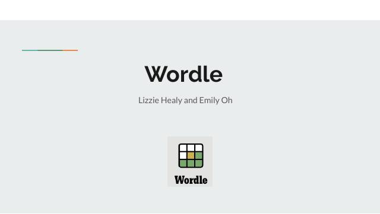
Code + slides Computer ScienceCOMP SCI 106 · Fall 2023 Wordle in Java Recreates the New York Times Wordle game in Java: a Wordle class for game logic and guess feedback, a CSVReader for the word list, and ANSI color codes to show feedback in the terminal. JavaData structures
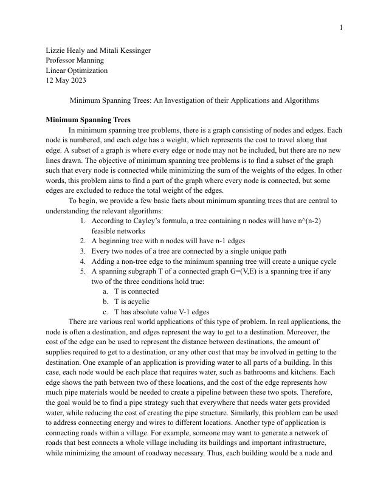
Paper + slides MathematicsMATH 210 · Spring 2023 Minimum Spanning Trees: Applications and Algorithms Implements Prim's algorithm to find minimum spanning trees, applies it to a map of Haverford College's campus to connect every building with the least total distance, and compares the approach with maximum-flow solutions. Prim's algorithmGraph theory
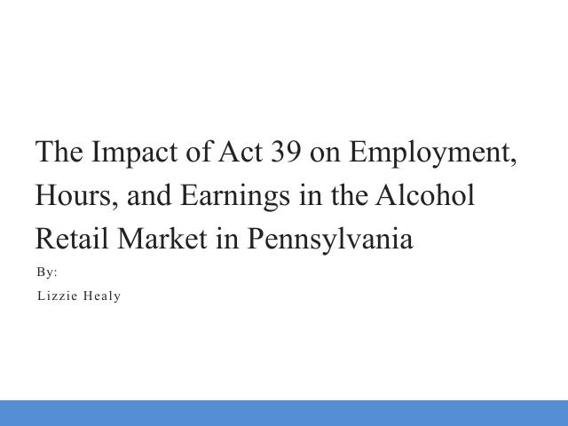
Paper + slides EconomicsECON 384 · Spring 2023 The Impact of Act 39 on Pennsylvania's Alcohol Retail Labor Market A difference-in-differences study of how Pennsylvania's Act 39 affected employment, hours and earnings in beer, wine and liquor retail across 67 counties, using QCEW data, with border-county spillovers and a placebo test on neighboring states. Difference-in-differencesQCEW dataPlacebo tests
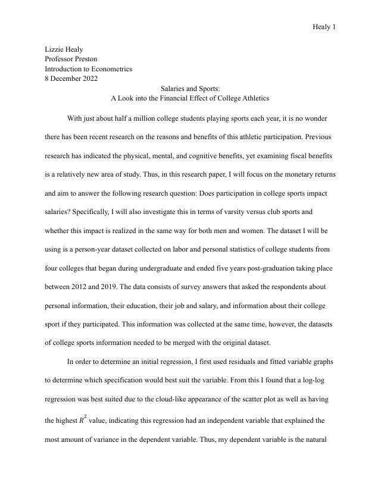
Paper EconomicsECON 304 · Fall 2022 Salaries and Sports: The Financial Effect of College Athletics Do college athletes earn more after graduation? Log-log regressions with individual, time and sport fixed effects on a 2012 to 2019 person-year dataset find varsity athletes earning less than non-athletes on average, with female varsity athletes faring better than male ones. StataLog-log regressionFixed effects
draft text 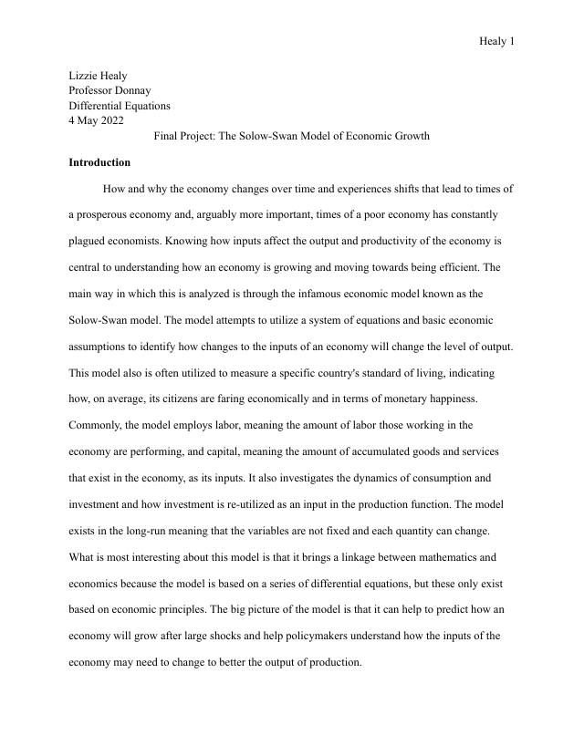
Paper MathematicsMATH B210 · Spring 2022 The Solow-Swan Model of Economic Growth Works through the Solow-Swan growth model as a system of differential equations to show how changes in an economy's inputs shift its output and long-run standard of living. Differential equationsGrowth models
draft text Paper EconomicsECON 203 · Fall 2021 Higher Education and Overall Happiness Tests whether education level relates to happiness using World Values Survey data, split by income, marital status, age and health. Contrary to the team's hypothesis, no significant relationship appeared. Hypothesis testingWorld Values Survey
No matching items